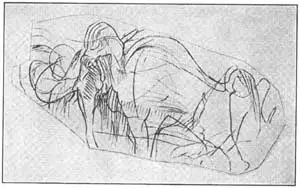
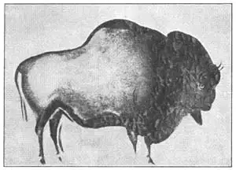

01
THE OLDEST PICTURES IN THE WORLD
世界上最古老的画

I WAS listening to the teacher, but I had my pencil in my hand. There were two little dots about an inch apart on my desk lid. Absent-mindedly I twisted my pencil point into one dot and then into the other. The two dots became two little eyes. I drew a circle around each eye, then I joined the two circles with a half-circle that made a pair of spectacles.
The next day I made a nose and a mouth to go with the eye and spectacles.
The next day I finished the face and added ears and some hair.
The next day I added a hat.
The next day I added a body, with arms, legs, and feet.
The next day I went over the drawing again, bearing heavily on my pencil. Over and over again I followed the lines till they became deep grooves in my desk lid.
The next day my teacher caught me and I caught it!
The next day my father got a bill for a new desk and I got— Well, never mind what I got.
“Perhaps he’s going to be an artist,” said my mother.
“Heaven forbid!” said my father. “That would cost me much more than a new desk.” And heaven did forbid.
I know of a school that has a large wooden tablet in the hall for its pupils to draw upon. At the top of the tablet is printed:
IF YOU JUST MUST DRAW, DON’T DRAW ON YOUR DESK,
DRAW ON THIS TABLET.
If you put a pencil in any one’s hand, he just must draw something. Whether he is listening to a lesson or telephoning, he draws circles and faces or triangles and squares over the pad—if there is a pad. Otherwise he draws on the desk top or the wall, for he just must draw something. Have you ever seen any telephone pad that was not scribbled upon? We say that’s human nature. It shows you are a human being.
Now, animals can learn to do a good many things that human beings can do, but one thing an animal can’t learn is to draw. Dogs can learn to walk on two legs and fetch the newspaper. Bears can learn to dance. Horses can learn to count. Monkeys can learn to drink out of a cup. Parrots can learn to speak. But human beings are the only animals that can learn to draw.
Every boy and girl who has ever lived has drawn something at some time. Haven’t you? You have drawn, perhaps, a horse or a house, a ship or an automobile, a dog or a cat. The dog may have looked just like a cat or a cat-erpillar, but even this is more than any animal can do.
Even wild men who lived so long ago that there were no houses, only caves, to live in—men who were almost like wild animals, with long hair all over their bodies—could draw. There were no paper or pencils then. Men drew pictures on the walls of their caves. The pictures were not framed and hung on the walls. They were drawn right on the walls of the cave and on the ceiling too.
Sometimes the pictures were just scratched or cut into the wall and sometimes they were painted in afterward. The paints those men used were made of a colored clay mixed with grease, usually simply red or yellow. Or perhaps the paint was just blood, which was red at first and then turned almost black. Some of the pictures look as if they had been made with the end of a burned stick as you might make a black mark with the end of a burned match. Other pictures were cut into bone—on the horns of deer or on ivory tusks.
Now, what do you suppose these cave men drew pictures of? Suppose I asked you to draw a picture of anything—just anything. Try it. What you have drawn is probably one of five things. A cat is my first guess，a sail-boat or an automobile is my second, a house is my third guess, a tree or a flower is my fourth, and a person is my fifth. Are there any other kinds?

No.1-1 CHARGING MAMMOTH（猛犸）
Courtesy of The University Prints
Well, the cave men drew pictures of only one kind of thing. Not men or women or trees or flowers or scenery. They drew chiefly pictures of animals. And what kind of animals, do you suppose? Dogs? No, not dogs. Horses? No, not horses. Lions? No, not lions. They were usually big animals and strange animals. But they were pretty well drawn, so that we know what the animals looked like. Here is a picture a cave man drew thousands of years ago.
You know it’s a picture of some animal, and it’s not a cat or a caterpillar. It is some animal of the kind they had in those days. It looks like an elephant and it was a kind of elephant—a huge elephant. But its ears were not big like our elephants’ ears and it had long hair. Elephants now have skin or hide, but hardly any hair. This animal we call a mammoth. It had long hair because the country was cold in those days and the hair kept the animal warm. And it was much, much bigger even than our elephants.
There are no mammoths alive now, but men have found their bones and they have put these bones together to form huge skeletons. We still call any very big thing “mammoth.” You’ve probably heard of Mammoth Cave in Kentucky. It was called Mammoth, not because mammoths lived in it, because they didn’t, but just because it is such a huge cave.
The cave men drew other animals besides the mammoth. One was the bison, a kind of buffalo. You can see a picture of a buffalo on our five-cent piece. It looks something like a bull. A little girl had gone to a cave in Spain with her father, who was searching for arrow-heads. While he was looking on the ground, she was looking at the ceiling of the cave and she saw what she thought was a herd of bulls painted there. She called out, “See the bulls!” and her father, thinking she had seen real bulls, cried: “Where? Where?”

No.1-2 STANDING BISON（野牛）
Courtesy of The University Prints
Other animals they drew were like those we have now—reindeer, deer with big antlers, and bears and wolves.
It was quite dark in the caves where the cave men drew these pictures, for of course there were no windows, and the only light was a smoky flame from a kind of lamp. Why, then, did they make pictures at all? Such pictures couldn’t have been just for wall decorations, like those you have on your walls, because it was so dark in the cave. We think the pictures were made just for good luck, as some people put a horseshoe over the door for good luck. Or perhaps they were to tell a story or make a record of some animal the cave man had killed. But perhaps the cave man just had to draw something, as boys and girls nowadays draw pictures on the walls of a shed or even sometimes on the walls of their own houses or, worse yet, on their desk tops.
The pictures made by these wild men—bearded and hairy cave men —are the oldest pictures in the world, and the artists who made them have been dead thousands of years. Can you think of anything you might ever make that would last as long as that?
【中文阅读】
我正在听老师讲课，可手里在玩铅笔。
我课桌的桌面上有两个相距约一英寸的小点。
我心不在焉地转动手中的铅笔，用笔尖在一个点上戳了一下，又在另一个点上戳了一下。两个小点变成了一双小眼睛。我在每只眼睛旁边画了个圈，又画了个半圈，把两个圆圈连起来，这就画出了一副眼镜。
第二天，我画了鼻子和嘴巴，配合那双眼睛和眼镜。
第三天，我画完了脸，还补充了耳朵和头发。
第四天，我又加了一顶帽子。
第五天，我添上了身体部分：胳膊、腿和脚。
第六天，我还是拿铅笔用力地画着。我一遍又一遍地描着线直到把它们深深地印在我的课桌上。
第七天，我被老师逮个正着，但我也画完了。
第八天，我爸收到了一张新课桌的账单，而我却得到了——算了，甭提我得到了什么吧。
“他可能会成为画家。”母亲说。
“但愿不会！”父亲答道，“那要花掉我比一张新课桌多得多的钱。”好在上帝拦阻了。
据我所知，某所学校在大厅里放置了一块大木牌，专供学生涂鸦。木牌上方刻着这样一句话：
只是不要在课桌上画。
如果把铅笔放在某人手中，他就一定会画点什么。他不管是在听课还是在接电话，只要手头有本便签簿，他就会在上面画些圈圈啦，脸蛋啊，或者是三角形和正方形什么的。要不他就会在课桌或墙壁上涂画，因为他总得要画点什么。你看见过没有被乱涂乱画的电话簿吗？这就是人的本性。这表明你是一个真正的人。
如今，动物可以学做许多人类能做的事情，但有一件事动物学不会，那就是画画。狗能用两条腿学走路，甚至帮人取报纸；熊能学会跳舞；马能学会数数；猴子可以学用杯子喝水；鹦鹉可以学舌；但是只有人类才能学会画画。
每一个男孩或女孩都在童年时代的某个时候画过些什么。难道不是吗？你或许画过马或房子，船或汽车，狗或猫。这狗被你画得就像猫，或像一条毛毛虫，但即便如此，你还是比任何动物都强。
甚至生活在很久以前的原始人也能画画。那时还没有房屋，他们全身长着长长的毛发，只住在洞穴里过着几乎和野兽一样的生活。那时候没有纸和笔。他们在穴壁上画画。这些图画没有装裱悬挂在墙上，而是直接画在洞壁和洞顶上。
这些图画有的只是涂鸦或刻在洞壁上，有的是后来才画上去的。当时人们所用的颜料是由一种掺杂着动物油脂的有色粘土混合制成的，通常只有红黄色，或者就用鲜血做颜料，开始是红色，后来几乎就变成了黑色。有些图画看起来就像是用一根烧焦的木棒头画的，就像我们用一根烧过的火柴头画一个黑色标志。还有些图画是刻在骨头上的，比如鹿角或象牙。
现在来猜想一下这些穴居人画的是什么？如果让你随意画幅画——也就是画什么都行。试试看吧。你画的可能是以下五种事物中的一种。我首先猜的是猫，第二次猜了帆船或汽车，第三次猜的是房子，第四次猜的是树或花，最后才猜了人。还会猜出其他什么呢？
其实，穴居人只画了一种东西。不是男人，不是女人，不是树、不是花，也不是风景。他们主要画的是动物。你认为他们画的是哪种动物呢？狗？不，不是狗。马？不，不是马。狮子？不，也不是狮子。他们通常画的是一些大型和奇特的动物。但这些动物都画得栩栩如生，这使我们知道这些动物的长相。下图是一个几千年前的穴居人画的画。
我们看得出这画的是某种动物，但不是猫，也不是毛毛虫。那是他们那个时代特有的某种动物。它看起来像一头象，而它的确就是象的一种——巨象。它的耳朵没有我们现在的象那么大，还长着长长的毛发。现在的象有兽皮或毛皮，但几乎没有毛发。我们把图上的动物称为猛犸（又名毛象)。毛象的毛发很长，因为那时候天气寒冷，而长毛可以保暖。但它比我们现在的象大很多很多。
如今猛犸早已绝种，但人类已经找到了它们的骨头，并把它们放在一起拼成了一个大型骨架。我们现在仍将庞然大物称作“猛犸”。你可能听说过肯塔基州的猛犸洞 穴。它被称作猛犸洞并不是因为猛犸在这洞里住过，实际并没住过，而仅仅因为这是一个非常大的洞穴。
除了猛犸，穴居人还画过其他动物。其中有种野牛，就是水牛。水牛的图片可以在美国的5分硬币上看到。它看起来像一头公牛。在西班牙，有个小女孩曾和她的父亲一起走进一个洞穴，他们按着箭头，爸爸在地上寻找，小女孩却盯着洞顶打量。她看见洞顶上画了一群她以为是公牛的动物。她大喊一声，“看，公牛！”她爸爸还以为她看见了真的公牛，喊道：“在哪？在哪？”
他们画的其他动物和我们今天有的这些动物差不多——驯鹿、长角鹿，还有熊和狼。
穴居人画画的穴洞十分昏暗，因为那儿根本就没开窗。唯一的光亮就是某种壁灯发出的昏暗的光。那他们干吗要画画呢？这些图画不可能仅仅只是为了装饰洞壁，就像我们在墙上挂画一样，因为洞穴里实在是太暗了。我们认为穴居人画画是为了祈求好运，就像人们把马蹄铁放在门头上企盼吉祥是一样的。或者他们是要讲述一个故事或就是记下捕杀的某种动物。或许他们不得不画画，就像现在的孩子们在小木屋，甚至有时候在自家的墙上画画一样，或干脆就在课桌上画。
这些原始人——多须长毛的穴居人——画的是世界上最古老的画。但这些艺术家早在几千年前就去世了。你认为你所制作的任何东西能像那些画一样持久吗？